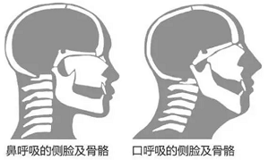
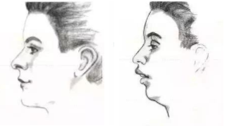

经常会听到朋友说，以前班里长得好看的同学，几年不见怎么就变得不像了，甚至有的还丑了不少。。。。。。真是不得不感叹，岁月是把杀猪刀啊！
什么是口呼吸
正常情况下，人们吸入呼出空气都是经过鼻腔，这个时候的自然表现是上下唇微微闭合，气流很自然的通过鼻腔。鼻呼吸时，嘴唇闭拢、牙齿轻合，舌头支撑着上颚。如果呼吸气流主要通过口腔出入，当口腔气流>30%呼吸气流量时，即为口呼吸。口呼吸时，嘴巴微张或半张，舌头不再紧贴上颚。
习惯口呼吸是是什么原因
- 一种情况是，上呼吸道堵塞造成的，鼻窦炎、鼻息肉、鼻甲肥大、腺样体肥大、扁桃体肥大等造成呼吸道堵塞，导致他们不能用鼻子呼吸，而只能用口呼吸。
- 另一种情况是，并不存在疾病，只是习惯造成的。
对颜值的影响
科学家根据口呼吸的空气流动方向对脸部的骨骼影响做出了以下判断：  看起来可能不太直观，那接着看下面一幅图：同一个人，如果正常呼吸，会长得像左侧头像；如果用口呼吸，则会像右侧图像：  这下明显了吧。如果你觉得这是画的，不真实。那最后再上一幅真图：同一个人，第一幅是他10时的照片，后面2幅是他17岁时的照片： 如果你觉得案例太少，网络上还可以搜索到很多类似的照片。相信对于爱美的你，肯定忍受不了这种结果吧！
其它不好的影响
相信在这个看脸的时代，光颜值一项弊端就足你另你做出改变了。但为了科普，这里还是把其它危害也罗列一下：
- 使牙齿生长产生异常，引起咬合问题；
- 口腔溃疡、扁桃体、腺样体肿大；
- 嘴巴呼吸，氧气吸入量不够，睡眠质量会差，人在白天就容易打瞌睡，注意力不集中，甚至智力也会受到轻微影响；
- 黑眼圈。当人们用正常的鼻气道通气方式进行呼吸时，鼻窦产生一氧化氮有助提升人体血氧饱和度18%之多，口呼吸则不。血氧饱和度高，“青皮蛋”就少。看看身边孩子，小小年纪就有明显黑眼圈的，十之八九已经患有口呼吸；
- 睡觉打鼾的孩子基本都是口呼吸，严重的可引起睡眠呼吸暂停综合症，伴随一生，是非常危险的；
- 无精打采 “痴呆面容”。
- 联系耳鼻喉科医生或者五官科医生，检查有没有鼻上呼吸道的阻塞性疾病，进行彻底治疗。
- 牙齿矫正。因为“口呼吸面型”主要影响的是牙齿的排列，继而引发连锁反应。所以，矫正牙齿也会对改善面型起到非常显著的作用。
- 进行唇舌肌锻炼。平时，可以做一些肌功能训练。年纪小一点的儿童，可以用低敏透气性好的口腔专用胶带粘住上下唇，使其能够闭口呼吸。而年纪稍微大一点，可以在医生指导下用肌功能训练器进行唇舌肌的锻炼。